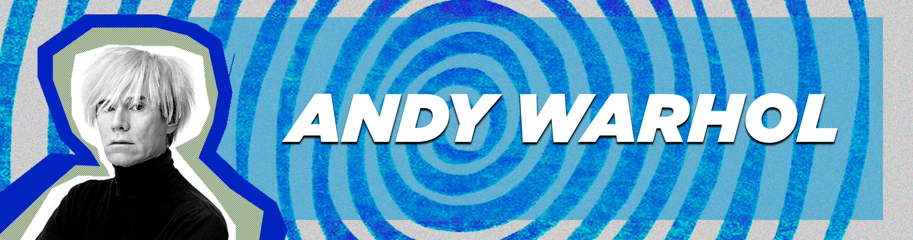

El Museo de Arte Latinoamericano de Buenos Aires - Fundación Costantini, más conocido simplemente como MALBA, es un museo argentino fundado en septiembre de 2001

La muestra Soplo reúne sesenta piezas de Ernesto Neto (Río de Janeiro, 1964) producidas desde finales de los años ochenta hasta la actualidad.

La muestra se concentra en las experiencias cinéticas de Le Parc en torno a la luz, realizadas principalmente en los años 60.

El título de la exposición, Tercer ojo, surge de la obra de Kahlo, que representa la obsesión amorosa de la pareja de artistas.

La génesis de Abaporu podría estar tanto en la mitología clásica como en la París moderna

"Terapia" invita al visitante a una muestra recrea los vínculos entre arte y psicoanálisis

Esta muestra intenta recuperar las prácticas que algunos artistas relacionados con el Paraguay
Recorrido virtual por la puesta actual de la Colección y por las exposiciones temporarias. El museo accesible para toda la comunidad online.
Invitada especial luego de producir y dirigir la ultima pelicula de MARVEL, Victoria nos cuenta como llego a donde esta ahora y la dificultad de ser mujer la industria del cine y superheroes
Compra EntradasHistoria cinematografico del universo MARVEL, con la participacion excluvia de Victoria ALonso, productora de cine argentina, actualmente productora ejecutiva en MARVEL
Conocenos